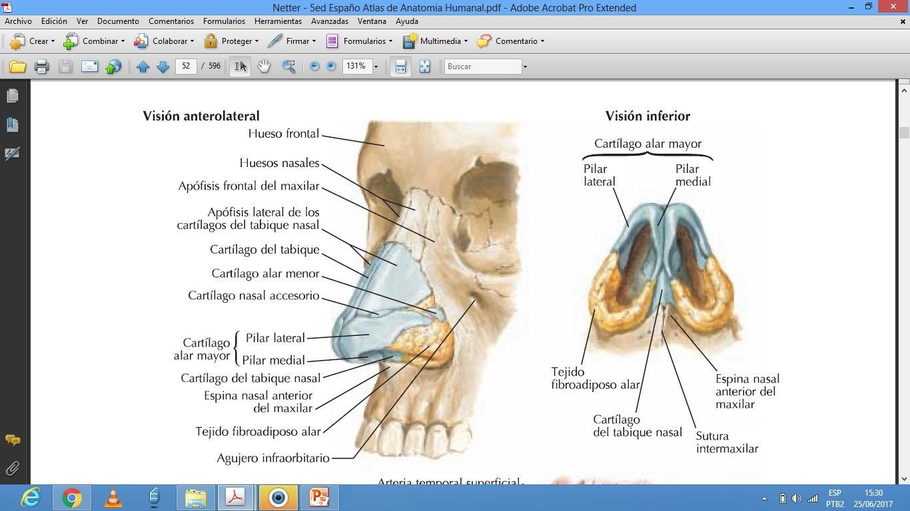
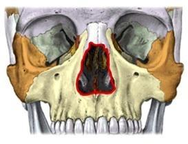
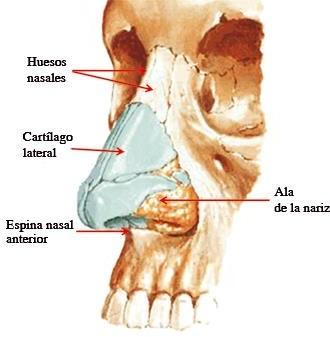
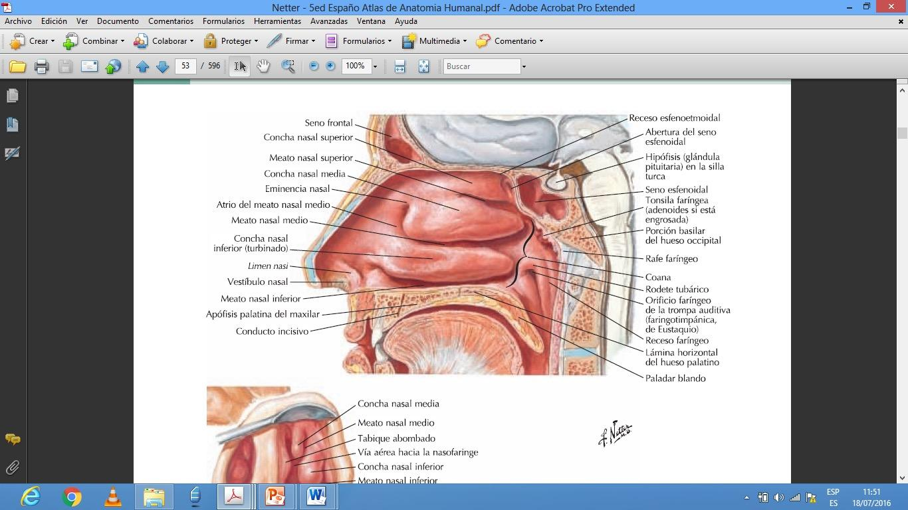
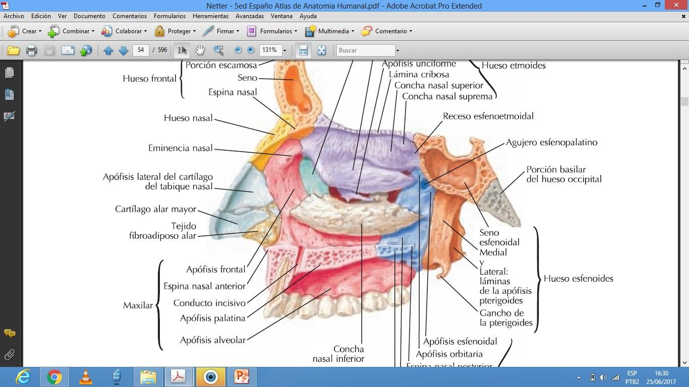
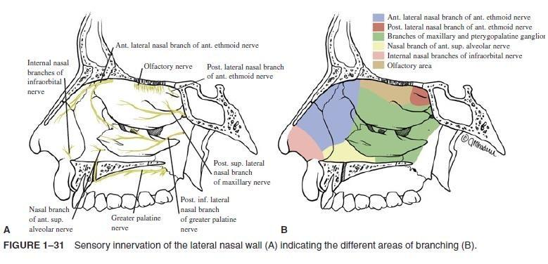
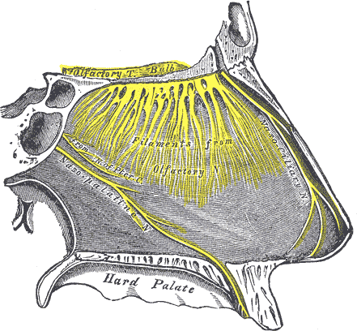
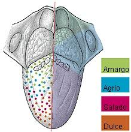

ClinicusMed · Dossiê Clinicus — Padrão de Excelência
| Constituição Anatômica |
|---|
| Um esqueleto |
| Uma camada muscular |
| Um revestimento externo |
| Um revestimento interno |



| Componente | Estruturas |
|---|---|
| Estrutura Óssea | Osso Nasal, Processo Alveolar (Maxilar), Apófise Frontal do Maxilar |
| Estrutura Cartilaginosa | Cartilagens Laterais Superiores (Triangulares), Cartilagens Laterais Inferiores (Alares Maiores), Parte superior do Septo cartilaginoso, Cartilagens Acessórias (Alares Menores) |

| Estrutura | Característica |
|---|---|
| Vestíbulo Nasal | Entrada das cavidades nasais. Revestimento CUTÂNEO (não mucoso), coberto de pelos, retém poeira/impurezas do ar inspirado. Pele com glândulas sebáceas |

| Parede | Constituição |
|---|---|
| Inferior | De frente pra trás: apófise palatina do maxilar + lâmina horizontal do palatino |
| Superior | Lâmina cribosa do osso etmoide |
| Medial | Septo nasal (formado pela reunião da lâmina perpendicular do etmoide + vômer + cartilagem septal) |
| Lateral | Formada por múltiplos ossos, com os cornetes (superior/médio do etmoide + inferior) |
| Artéria | Território |
|---|---|
| Artéria Oftálmica → Etmoidais anterior/posterior | Abóbada das cavidades nasais |
| Artéria Maxilar → Esfenopalatina | Regiões posterior, lateral, medial e inferior |
| Artéria Facial | Envia ramos pras narinas |
| Drenagem Venosa | Região |
|---|---|
| Veia Facial | Anterior |
| Veias Maxilares, Plexo Pterigóideo | Posterior |
| Veias Intracranianas | Superior |


| Ramo do Trigêmeo | Componente |
|---|---|
| Nasociliar | Infratroclear, Etmoidal Anterior |
| Maxilar | Infraorbitário, Gânglio Esfenopalatino |
| Função | Detalhe |
|---|---|
| Respiratória | 2 aspectos: Ventilação (inspiração — irregularidades da parede lateral aumentam a superfície de contato do ar) + Fonação (expiração) |
| Vocal | Durante a expiração, a coluna de ar provoca sons por vibração das pregas vocais na laringe. As vibrações chegam às cavidades nasais, que atuam como "caixa de ressonância" |
| Olfatória | Desenvolve-se na parte superior das cavidades nasais, onde está a origem dos nervos olfatórios. O olfato começa a partir do ar inspirado E do ar expirado |
| Porção | Localização |
|---|---|
| Vestíbulo Bucal | Na frente dos arcos dentários |
| Boca propriamente dita | Atrás dos arcos dentários |
A cavidade bucal tem dimensões variáveis conforme o estado das paredes e movimentos da mandíbula. Comunica-se com o exterior pelo orifício da boca, e pra trás, com a cavidade faríngea, pelo istmo das fauces. Contém os dentes, dispostos em 2 arcadas.
| Papila | Característica |
|---|---|
| Circunvaladas (Caliciformes) | 7 a 12, situadas na frente do sulco terminal |
| Fungiformes | Base estreita, ápice alargado (como chapéu de cogumelo). 150-200, disseminadas no dorso da língua, na frente do sulco terminal |
| Filiformes | Pequenas, com ápice em prolongamentos finos. Desenham linhas radiadas em direção às bordas, na frente do sulco terminal |
| Foliadas | Nas bordas posterolaterais da língua |
| Ramo da Artéria Lingual | Território |
|---|---|
| Ramos Linguais Dorsais | Parte posterior |
| Artéria Sublingual | Parte anterior |
| Artéria Lingual Profunda | Dirige-se ao ápice da língua |

| Tipo | Região | Nervo |
|---|---|---|
| Sensitiva (geral — tato/dor/temperatura) | 2/3 anteriores (na frente do sulco terminal) | Nervo Lingual (ramo do Trigêmeo — V) |
| Raiz da língua (1/3 posterior) | Nervo Glossofaríngeo (ramos linguais) | |
| Pregas glossoepiglóticas, valéculas, epiglote | Nervo Laríngeo Superior (ramo do Vago) | |
| Sensorial (gustativa — paladar) | 2/3 anteriores | VII par (Facial) |
| 1/3 posterior | IX par (Glossofaríngeo) | |
| Raiz da língua + face anterossuperior da epiglote | X par (Vago) | |
| Motora | Toda a musculatura da língua | XII par (Hipoglosso) |
Vamos acompanhar um paciente com queixa seletiva de perda de paladar após uma cirurgia de ouvido, relacionando o caso à anatomia da inervação lingual. O caso evolui em 3 níveis — clica em cada um pra ver como as coisas vão se desenrolando.
O sistema guarda, no seu navegador, quais cards você já sabe bem e quais precisam voltar mais cedo — cada vez que você avalia um card, ele recalcula quando ele deve voltar.
10 questões, do mais básico ao mais puxado. Escolhe uma alternativa, depois clica em "Ver comentário completo" — vale a pena ler até quando você acerta, porque o comentário explica cada alternativa, não só a certa.
Todas as imagens desse capítulo, reunidas num só lugar pra revisão rápida.